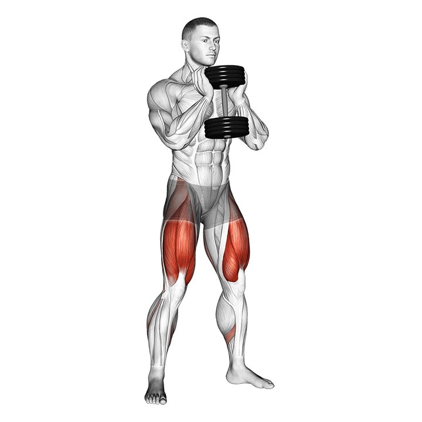

1. Sentadilla
Ejercicio principal de pierna para cuádriceps, glúteos y estabilidad general.
Técnica clave: pies firmes, abdomen activo, espalda neutra y bajada controlada.
Tip: mantén la rodilla alineada con el pie y empuja el suelo al subir.
Error común: colapsar rodillas hacia dentro o perder tensión en el tronco.
Temporizador de descanso
01:30
Registro
Sin registro guardado todavía.